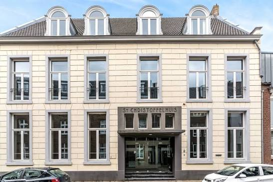
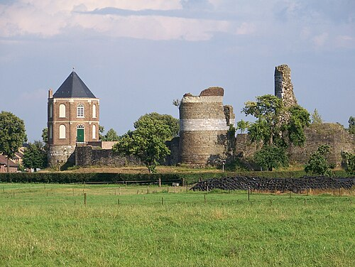
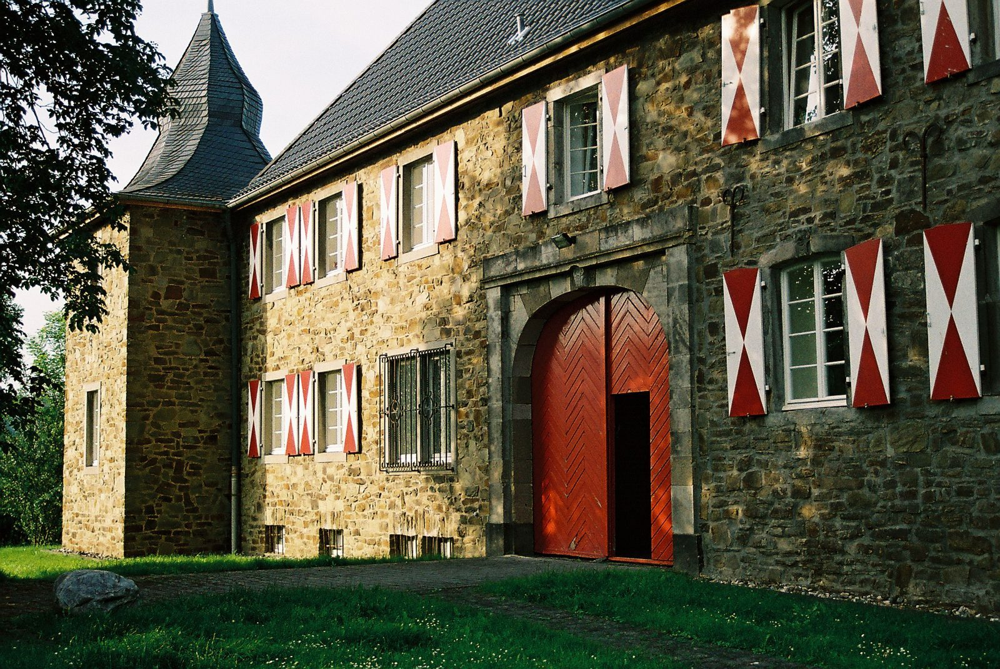
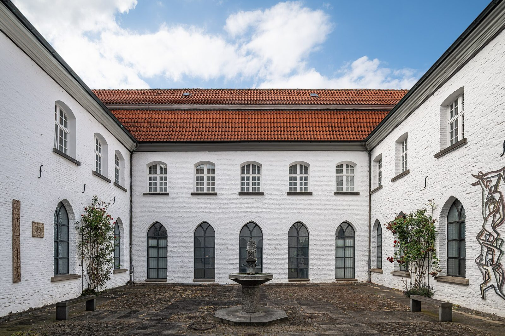

Kastelen & buitenplaatsen
Waar de familie woonde
Naast de gewone woonhuizen in Roermond en Blerick op de kaart, duiken in de adellijke jonker-tak een paar concrete plekken op: een buitenplaats die het echtpaar zelf liet bouwen, een familiebezit uit de 16e eeuw, een ambt met een eigen kasteel, het stamhuis in Helden, de Duitse ridderzetel van de baronnen Hillen zu Sülz en het klooster waar drie vrouwen uit de familie abdis waren. Hieronder per plek wat we ervan weten, met bron.
.jpg)
Ohé en Laak · gebouwd ca. 1548
Kasteel Het Geudje (Huis Hasselholt)
Catharina Hillen — dochter van Henricus Hillen en Sara van Brede, zus van burgemeester Johan Hillen (1512–1600) — trouwde in 1544 met Lodewijk in der Horst van kasteel Hattem bij Roermond, schout van het Ambt Montfort. Ze woonde liever op het platteland dan in het drukke Roermond, en rond 1548 liet het echtpaar op die plek een eigen buitenhuis bouwen: Kasteel Het Geudje, ook wel Huis Hasselholt genoemd, bij het dorp Ohé en Laak (gemeente Maasgouw).
Het echtpaar liet een alliantiewapen in de gevel aanbrengen — de gevelsteen hiernaast, gedateerd "ANNO 1548", met rechtsonder het Hillen-schild. In tweede instantie kreeg het kasteel ook een traptoren. De zuidelijke bakstenen langsgevel, in Maaslandse renaissancestijl, draagt het jaartal 1651, vermoedelijk het jaar van een verbouwing. Zie ook het familiewapen voor het volledige blazoen.
Een kleindochter van Catharina en Lodewijk — Elisabeth in der Horst, dochter van hun zoon Jan in der Horst — trouwde met ridder Harthard van Spee, drossaard van Montfort, die het kasteel liet uitbreiden met een noordvleugel. Diezelfde functie (drossaard van het Ambt Montfort) bekleedde begin 17e eeuw ook jonker Renier Hillen tot Helden, zie hieronder. Via Harthard en Elisabeths dochter Elisabeth van Spee (x Johan van der Velden) ging de lijn verder; het kasteel kwam in 1713 in handen van de familie Von Holthausen.
Bronnen: Wikipedia, "Kasteel Het Geudje", absolutefacts.nl, "Kasteel Hasselholt of Het Geudje".
Kessel · 16e eeuw
Klein Paarlo
Dit landgoed was in de 16e eeuw eigendom van de familie Van Hillen, een geslacht van patriciërs uit Roermond — dezelfde kring als de Roermondse burgemeesters in de stamboom. Willem van Merwijck, drost van Montfort en heer van Kessel (in 1555 beleend met kasteel Kessel), trouwde op 1 augustus 1570 met Johanna Hillen — enig kind van burgemeester Johan Hillen en Catharina van der Griende. Hun dochter Johanna van Merwijck erfde Klein Paarlo in 1625 van haar moeder, waarmee het bezit de familie Hillen weer uit ging.
Bronnen: Wikipedia, "Klein Paarlo", genwiki.nl, "Hillen" en "Van Merwijck" (Genealogie Limburg Wiki).

Roermond · ca. 1618–1650
Het Christoffelhuis
Jonkheer Johan van Hillen (1579–1618) — schepen van Roermond, gehuwd met Anna van Greefraedt — was nauw betrokken bij leenverheffingen en pachtgoederen in de stad, onder meer verbonden aan het Christoffelhuis. In oktober 1618 maakten hij en Anna hun testament: hun zoon jonker Dederik (ook Theodorus/Diederich genoemd) Hillen (1595–ca. 1655) erfde het huis aan de Hegstraat, de hof aan het Gebroek te Maasniel en land in het O.L.Vrouwe-veld.
Dederik trouwde in mei 1643, op de Spick te Swalmen, met Geertruijdt (Gertrudis) van Dursdael. Hij was schepen van Roermond en burgemeester in 1650; hun kinderen waren onder meer zoon Dederick en dochter Anna Christina (1645). Zie zijn volledige profiel in de stamboom.
Bron: Jan Ruiten, "Onder den Klockenslagh van Neel, Leeuwen en Asenray" — Christoffelhuis.

Ambt Montfort · 1618–1627
Ambt Montfort
Jonker Renier (Reyner) Hillen tot Helden (1566–1628) was drossaard van het Ambt Montfort (1618–1620) en later ook drossaard van het Land van Kessel (1627) — de hoogste bestuurs- en rechterlijke functionaris namens de landsheer in dat gebied, met zetel bij kasteel Montfort. Hij voerde de jonker-titel openlijk en wordt in akten steevast aangeduid als "jonker Renier van Hillen tot Helden". Zie ook het familiewapen van deze tak.
Bronnen: De Maasgouw (1925); Th.J. Bais, "Hillen Roermond" (2006).
Helden (Panningen) · vóór 1469–1675
Ten Hove (Huis Helden, "de Hoof")
Het stamhuis waar de tak "tot Helden" naar heet. Ten Hove was een omgracht huis ten westen van Panningen, in leen gehouden van de heer van Horn. Al vóór 1469 kwam het aan de familie Van Hillen, door een huwelijk of een aankoop. In 1517 volgde Reinier van Hillen zijn vader Dirk op, en in 1582 werd jonker Reyner Hillen tot Helden, toen nog minderjarig, met "de Hoof" beleend. Hij en zijn vrouw Geertruidt van Baexen liggen in Helden begraven.
In 1675 verkocht de familie het huis aan Jan Reinier Bouwens van der Boije, landrentmeester-generaal van Spaans Gelre, die twee jaar eerder de heerlijkheid Helden van de Spaanse koning had gekocht. Volgens genwiki gebeurde de verkoop door baron Arnold Rutger Hillen zu Sülz. Het hoofdgebouw werd begin 19e eeuw grotendeels afgebroken. De boerderij De Hoof, met resten van het poortgebouw, bestaat nog.
Hoe het huis er in de tijd van de familie uitzag, laat een tiendkaart uit 1685 zien. Het was een omgracht, U-vormig complex van één bouwlaag, in vakwerk. Het kasteel met zijvleugels ontstond pas rond 1715, toen de nieuwe eigenaar Jan Albert Bouwens van der Boije het liet verbouwen. Volgens pastoor Janssen (1925) woonde de familie Hillen vooral rond Roermond en verbleef ze maar af en toe op de Hoof. Wel werden ze begraven in de Sint-Lambertuskerk van Helden. Daar lag een grafsteen met zestien kwartierwapens, die later als drempel voor de kerkdeur werd gebruikt. In 1645 gaven de schepenen van Helden kolonel Reynaert von Hijllen erfelijk een ven achter "den Sterdt", als dank voor bewezen diensten.
Let op: oude foto's van "Kasteel Ten Hove" op internet zijn bijna altijd van het huis Ten Hove in Grathem, een ander kasteel. Van het huis in Panningen is geen foto uit de tijd van de familie bekend.
Bronnen: M.J. Janssen, "Het huis ten Hove te Helden", De Maasgouw 1925, M.J. Janssen, "Heeren von Hyllen", De Maasgouw 1902, Wikipedia, "Ten Hove (Panningen)", Kastelenlexicon, "Hove, Ten", genwiki.nl, "Hillen".

Lohmar (Rhein-Sieg-Kreis, Duitsland) · 1641–1766
Haus Sülz — de baronnen Hillen zu Sülz
Haus Sülz is een oude ridderzetel in het dal van de Sülz tussen Lohmar en Rösrath, al genoemd in een oorkonde van aartsbisschop Anno II uit 1075. In 1582 kwam het aan de familie von Zweiffel, die ook Burg Wissem in Troisdorf bezat. In 1641 trouwde Maria Helena von Zweiffel met Reyner (Reinart) Hillen tot Helden (1599–1675), keizerlijk kolonel en geheimraad van de keurvorst van Keulen. Het echtpaar woonde tot 1670 op Haus Sülz, dat bij de erfdeling van 1646 aan haar toeviel. Een procesakte van het Rijkskamergerecht uit 1646 noemt hem "Reynaert von Hillen zu Helden und Sülz, Obrist".
Hun zoon Arnold Rutger voerde de titel baron (Freiherr) Hillen zu Sülz en trouwde met Agnes Elisabeth de Merode. Hij stierf vóór 1682 zonder bekende kinderen. Dochter Anna trouwde met Johan Monemit von Boland, en diens nakomelingen hielden Haus Sülz tot ze het in 1766 verkochten aan Johann Paul La Valette St. George. Het huidige gebouw stamt uit diens verbouwing.
Bronnen: Wikipedia (de), "Haus Sülz", haus-suelz.de, "Historie", foto: Dieter Clasen, Wikimedia Commons (CC BY-SA 2.0 de), genwiki.nl, "Hillen".

Mülheim an der Ruhr · 1624–1688
Klooster Saarn — drie abdissen uit één familie
Van de twaalf kinderen van jonker Reyner Hillen tot Helden gingen er veel het klooster in. In het cisterciënzerinnenklooster Saarn bij Mülheim werden twee dochters na elkaar abdis. Agnes werd abdis op 14 februari 1642. Die verkiezing leidde de pauselijke nuntius Fabio Chigi, de latere paus Alexander VII. Zij stierf in 1652. Haar zus Anna Gertrud was eerst priorin en daarna abdis tot 1676. Daarna volgde hun nicht Gertrud Mechthild von Bronsfeld, dochter van hun zus Maria. Zij regeerde tot 1688. Broer Johan liet voor het klooster een altaar maken (1664).
In de familie waren ook: zus Josina Clara, abdis van het cisterciënzerinnenklooster Dalheim bij Wegberg (overl. 1668); zus Elisabeth Sibilla, non in Dalheim (overl. 1632, grafplaat in Saarn); en broer Wilhelm Gottfried, abt van de premonstratenzer abdij Hamborn (1647–1672). De grafstenen van Agnes en Anna Gertrud liggen nog in de kruisgang van Saarn. Het zegel van Agnes (1642) is het oudste gedateerde bewijs van het familiewapen.
Bronnen: G. von Roden, Die Zisterzienserinnenklöster Saarn, Duissern, Sterkrade (Germania Sacra N.F. 18, 1984), Abtei Hamborn, "Prälaten"; foto (kruisgang, 2026): Tuxyso, Wikimedia Commons (CC BY-SA 4.0).